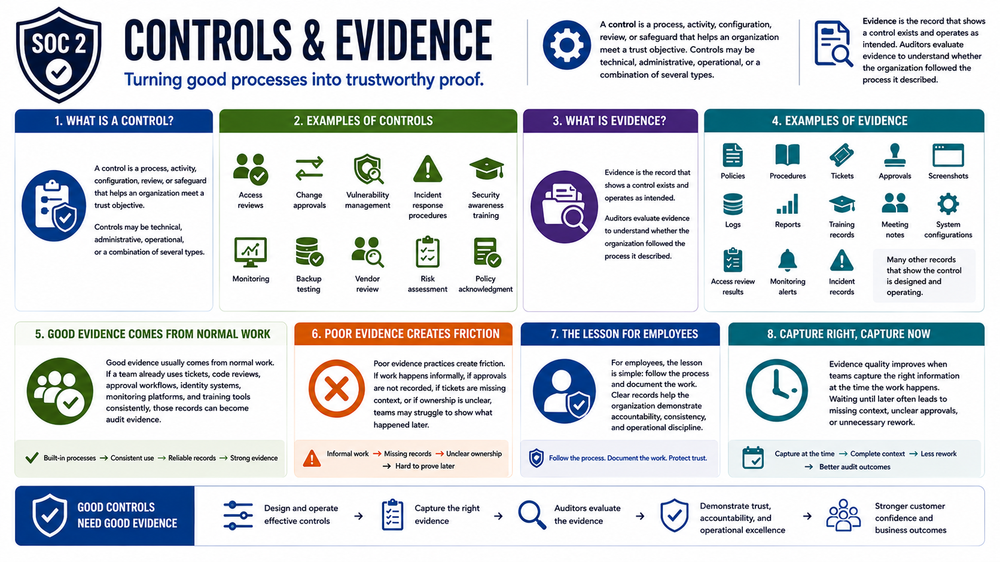

What Is SOC 2?
Controls and Evidence
Connecting to LMS... Progress: in progress
Version 1.0 | Date: 2026-06-16 | Educational overview of SOC 2 concepts, controls, evidence, and trust.

Narration
A control is a process, activity, configuration, review, or safeguard that helps an organization meet a trust objective. Controls may be technical, administrative, operational, or a combination of several types.
Examples include access reviews, change approvals, vulnerability management, incident response procedures, security awareness training, monitoring, backup testing, vendor review, risk assessment, and policy acknowledgment.
Evidence is the record that shows a control exists and operates as intended. Auditors evaluate evidence to understand whether the organization followed the process it described.
Evidence may include policies, procedures, tickets, approvals, screenshots, logs, reports, training records, meeting notes, system configurations, access review results, monitoring alerts, or incident records.
Good evidence usually comes from normal work. If a team already uses tickets, code reviews, approval workflows, identity systems, monitoring platforms, and training tools consistently, those records can become audit evidence.
Poor evidence practices create friction. If work happens informally, if approvals are not recorded, if tickets are missing context, or if ownership is unclear, teams may struggle to show what happened later.
For employees, the lesson is simple: follow the process and document the work. Clear records help the organization demonstrate accountability, consistency, and operational discipline.
Evidence quality improves when teams capture the right information at the time the work happens. Waiting until later often leads to missing context, unclear approvals, or unnecessary rework.